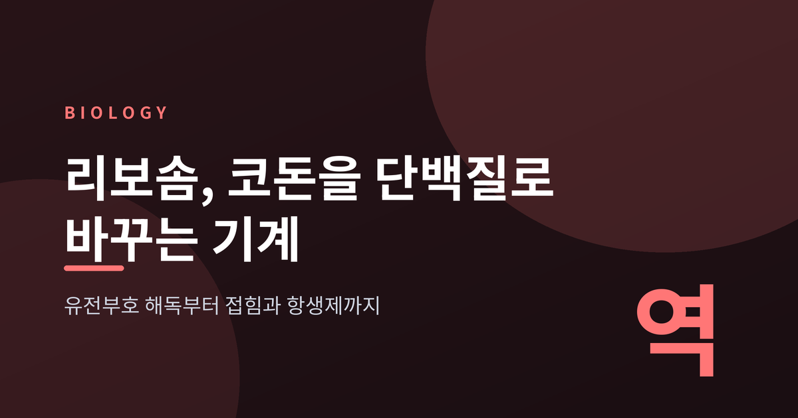
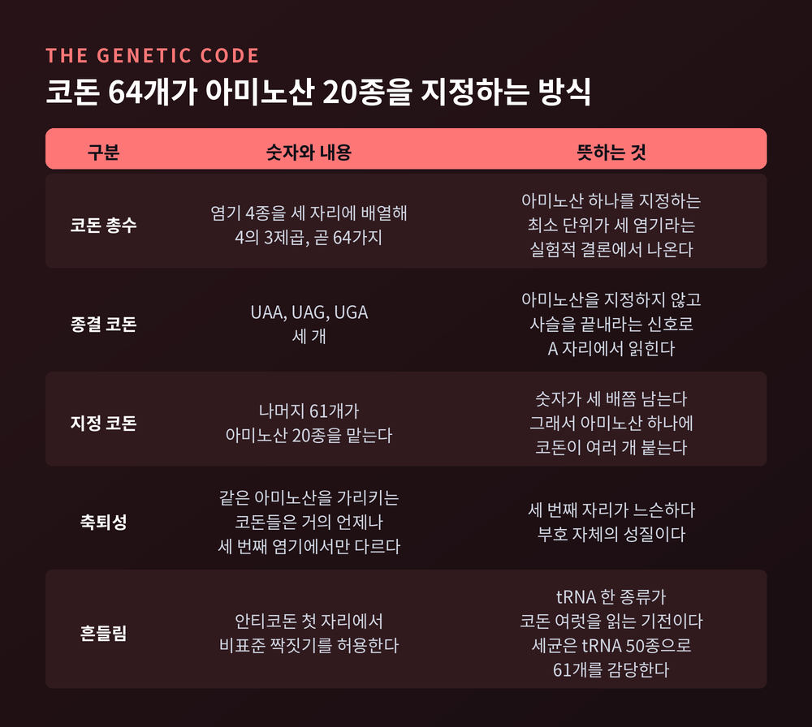
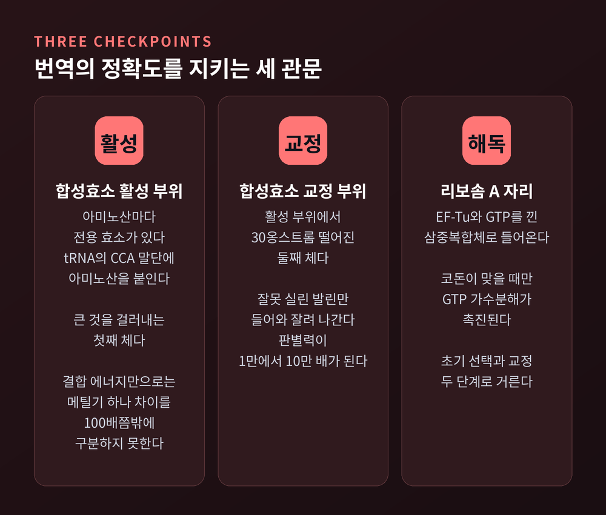
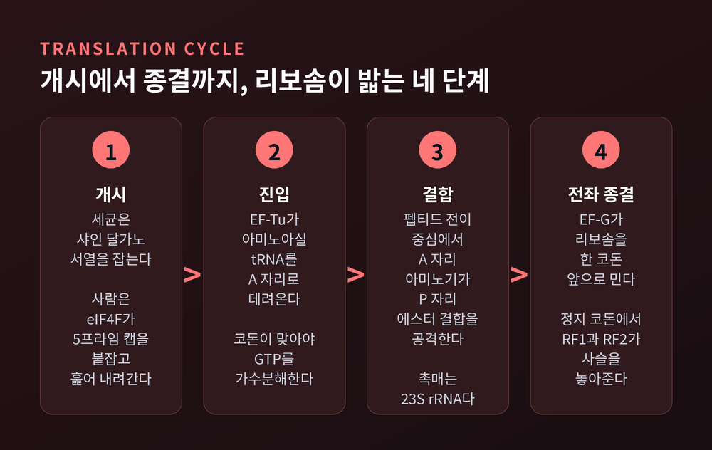
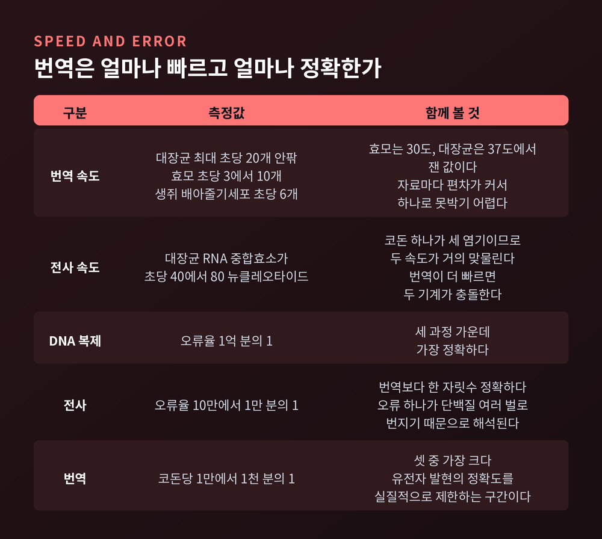
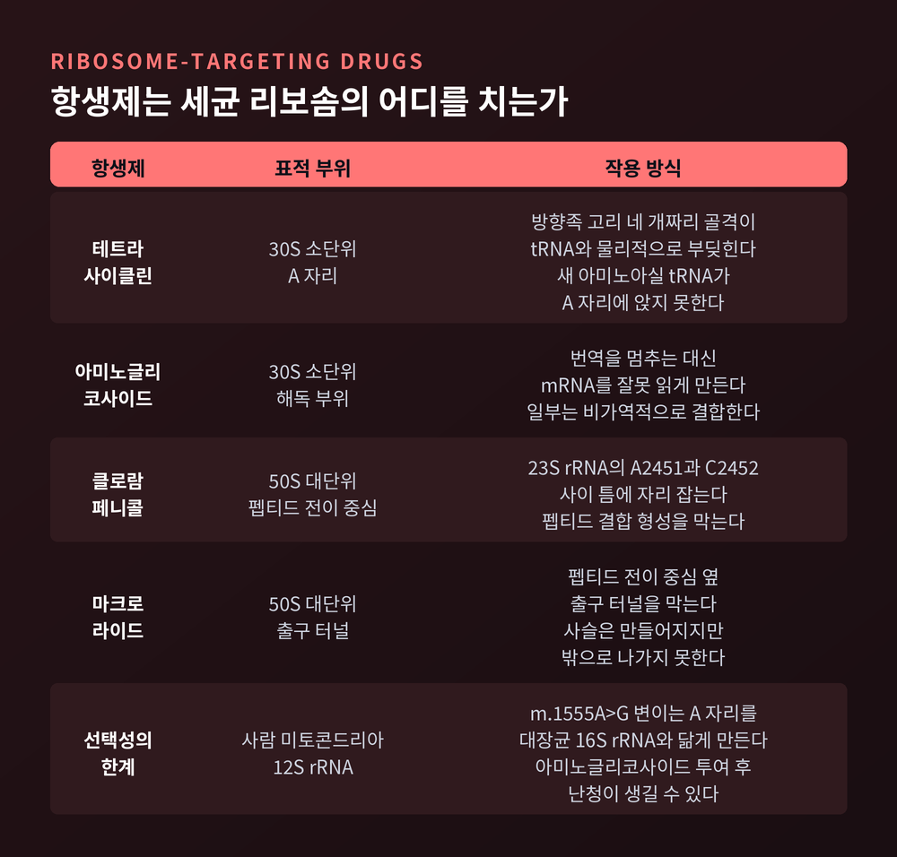

리보솜 단백질 번역 원리 — 코돈 해독부터 접힘과 항생제까지
오늘은 리보솜이 유전 정보를 단백질로 바꾸는 과정을 정리해 보려 합니다.
DNA가 mRNA로 옮겨 적히는 데까지는 비교적 널리 알려져 있습니다.
그 다음 구간, 그러니까 세 글자짜리 암호가 실제 아미노산 사슬이 되는 지점을 들여다보겠습니다.
먼저 세 줄로 요약합니다.
- 유전부호는 코돈 64개로 이루어지고, 그중 61개가 아미노산 20종을 지정합니다.
- 번역의 정확도는 합성효소와 리보솜 두 곳에서 이중으로 지켜지며, 최종 오류율은 코돈 1천~1만 개당 1개 수준입니다.
- 펩티드 결합을 만드는 촉매는 단백질이 아니라 RNA입니다. 리보솜 표적 항생제는 바로 이 구조의 차이를 노립니다.

코돈 64개, 아미노산 20종
mRNA는 A, C, G, U 네 가지 염기로 적혀 있습니다.
아미노산 하나는 염기 세 개, 곧 코돈 하나가 지정합니다.
네 가지를 세 자리에 배열하니 경우의 수는 64가지입니다.
이 가운데 3개는 종결 신호입니다. 나머지 61개가 아미노산을 지정합니다.
그런데 단백질에 쓰이는 표준 아미노산은 20종뿐입니다.
숫자가 세 배쯤 남습니다.
남는 자리는 중복으로 채워집니다. 아미노산 하나에 코돈이 여러 개 배정되는 것이죠.
이것을 축퇴성이라고 부릅니다.
흥미로운 점은 같은 아미노산을 가리키는 코돈들이 거의 언제나 세 번째 염기에서만 다르다는 것입니다.
세 번째 자리가 느슨하다는 뜻입니다.
그래서 tRNA는 안티코돈 첫 자리에서 비표준 짝짓기를 허용합니다. 흔들림이라 부르는 현상입니다.
tRNA 한 종류가 코돈 여럿을 읽을 수 있으니, 세균은 tRNA를 50종쯤만 갖추고도 61개 코돈을 감당합니다.

정확도는 리보솜 밖에서 먼저 결정됩니다
번역이 정확하려면 tRNA에 올바른 아미노산이 실려야 합니다.
그 일을 아미노아실-tRNA 합성효소가 맡습니다.
아미노산 종류마다 전용 효소가 있어, tRNA의 CCA 말단에 아미노산을 에스터 결합으로 붙입니다.
문제는 아미노산끼리 너무 닮았다는 데 있습니다.
이소류신과 발린은 메틸기 하나 차이입니다.
결합 에너지만 따지면 100배 정도의 차이밖에 나지 않습니다.
그래서 효소는 체를 두 번 씁니다.
활성 부위가 큰 것을 거르고, 30옹스트롬쯤 떨어진 별도의 교정 부위가 작은 것을 거릅니다.
큰 이소류신은 교정 부위에 아예 들어가지 못하고, 잘못 실린 발린만 들어가 잘려 나갑니다.
이 이중 체 덕분에 판별력은 1만에서 10만 배까지 올라갑니다.
발린이 이소류신 자리를 차지하는 비율은 3,000분의 1 수준으로 떨어집니다.
tRNA 오충전 자체의 오류율은 100만 분의 1 정도로 보고됩니다.
리보솜에서도 검문이 한 번 더 있습니다.
아미노아실-tRNA는 혼자 오지 않고 EF-Tu와 GTP를 낀 삼중복합체로 들어옵니다.
코돈이 맞을 때에만 EF-Tu의 GTP 가수분해가 촉진되고, 그제야 tRNA가 놓여납니다.
맞지 않으면 그 전에 떨어져 나갑니다.
이 두 단계 걸러내기를 동역학적 교정이라 부릅니다. 1970년대에 홉필드와 니니오가 제안한 원리입니다.

대단위와 소단위, 그리고 세 개의 자리
세균 리보솜은 70S입니다. 분자량은 약 2.5 메가달톤입니다.
대칭이 없어 결정으로 만들기가 대단히 까다로웠고, 그 어려움이 구조 규명을 수십 년 늦췄습니다.
소단위인 30S는 16S rRNA 약 1,600개 뉴클레오타이드에 단백질 20종가량으로 이루어집니다.
대단위인 50S는 23S rRNA 약 2,900개, 5S rRNA 약 120개에 단백질 33종가량입니다.
자료마다 단백질 수는 조금씩 다릅니다. 종에 따라 달라지기 때문입니다.
사람의 세포질 리보솜은 80S입니다.
40S는 18S rRNA와 단백질 33종, 60S는 28S와 5.8S와 5S rRNA에 단백질 46종 안팎입니다.
더 크고 복잡하지만, 알려진 범위에서 작동 원리는 세균과 같습니다.
두 단위가 맞물린 틈에 tRNA가 앉는 자리가 셋 있습니다.
A 자리는 새 tRNA가 들어오는 입구, P 자리는 자라던 사슬을 든 tRNA의 자리, E 자리는 빈 tRNA가 빠져나가는 출구입니다.
사슬은 A에서 P로, tRNA는 P에서 E로 한 칸씩 밀려갑니다.
개시, 신장, 종결
세균의 개시는 mRNA 위의 샤인-달가노 서열에서 시작합니다.
개시 코돈 AUG보다 다섯에서 여덟 염기 앞에 있는 이 짧은 구간이 16S rRNA의 3' 말단과 짝을 짓습니다.
개시인자 IF1, IF2, IF3가 붙고, 포밀메티오닌을 실은 개시 tRNA가 P 자리에 앉습니다.
사람 세포는 방식이 다릅니다.
eIF4F 복합체가 mRNA의 5' 캡을 붙잡고, 40S가 실린 사전개시복합체를 끌어와 아래로 훑어 내려갑니다.
코작 서열이 있는 AUG에서 멈춥니다.
신장은 세 동작의 반복입니다.
EF-Tu가 tRNA를 데려오고, 펩티드 전이 중심이 결합을 만들고, EF-G가 GTP를 쓰며 리보솜을 한 코돈 앞으로 밉니다.
EF-Tu는 코돈이 맞아야 켜지지만, EF-G는 붙자마자 GTP를 가수분해합니다. 검문과 추진의 역할이 나뉘어 있는 셈입니다.
종결은 정지 코돈이 A 자리에 들어올 때 일어납니다.
RF1은 UAA와 UAG를, RF2는 UAA와 UGA를 알아봅니다.
방출인자는 P 자리 펩티딜-tRNA의 에스터 결합을 끊어 완성된 사슬을 놓아주고, RF3가 이들을 회수합니다.
여기서 한 가지 짚어둘 것이 있습니다.
방출인자에게는 교정 단계가 없습니다. 단 한 번의 판단으로 정지 코돈과 비슷한 코돈을 구별해야 합니다.

촉매는 단백질이 아니라 RNA였습니다
오랫동안 사람들은 펩티드 결합을 만드는 것이 리보솜 단백질일 것이라 짐작했습니다.
2000년에 답이 나왔습니다.
토머스 스타이츠 연구진이 고세균 50S 대단위의 구조를 2.4옹스트롬 해상도로 풀었습니다.
그리고 펩티드 전이 중심에서 18옹스트롬 이내에 단백질 사슬이 하나도 보이지 않았습니다.
촉매 자리 주변이 온통 23S rRNA였던 것입니다.
리보솜은 리보자임입니다. 지금까지 알려진 것 중 가장 큰 RNA 효소입니다.
반응 자체는 단순합니다. A 자리 아미노산의 아미노기가 P 자리 tRNA의 에스터 결합을 친핵 공격합니다.
2005년 계산 연구는 23S rRNA의 A2451 잔기와 물 분자들이 만드는 수소결합 그물이 활성화 에너지를 낮춘다고 제안했습니다.
2009년 노벨 화학상은 이 구조를 밝힌 세 사람에게 돌아갔습니다.
아다 요나트, 토머스 스타이츠, 벤카트라만 라마크리슈난입니다.
요나트가 1980년대에 결정학의 길을 열었고, 2000년에 스타이츠가 대단위를, 라마크리슈난이 소단위를 고해상도로 풀었습니다.
"단백질을 만드는 기계의 심장이 RNA다."
생명의 초기에 RNA가 먼저였다는 견해에 이 발견은 큰 힘을 실었습니다.
초당 스무 개, 그리고 남는 오차
대장균 리보솜은 최대 초당 20개 안팎의 아미노산을 이어 붙입니다.
같은 세포의 RNA 중합효소는 초당 40에서 80개 뉴클레오타이드를 읽습니다.
코돈 하나가 세 염기이니 두 속도가 거의 맞물립니다. 우연은 아닐 것입니다.
효모는 초당 3에서 10개로 더 느립니다. 다만 측정 온도가 30도이고 대장균은 37도입니다.
생쥐 배아줄기세포를 리보솜 프로파일링으로 재보니 초당 6개 정도였고, 유전자마다 값이 꽤 일정했습니다.
자료마다 숫자가 다르므로 단일한 값으로 못박기는 어렵습니다.
정확도는 어떨까요.
DNA 복제의 오류율은 1억 분의 1 수준입니다. 전사는 10만에서 1만 분의 1입니다.
번역은 코돈당 1만에서 1천 분의 1로, 셋 중 가장 큽니다.
그러니까 유전자 발현의 정확도를 실질적으로 제한하는 구간은 A 자리에서 일어나는 코돈 해독입니다.
300개 아미노산짜리 단백질이라면 열 개 중 하나쯤에 오류가 섞이는 셈입니다.
이 정도면 허술한 것 아니냐고 물으실 수 있습니다.
그런데 속도를 올리려고 코돈을 완벽 일치형으로 바꿔봤더니 접힘 오류가 늘었다는 실험이 있습니다.
빠름과 정확함, 그리고 제대로 접힐 시간 사이에 상충 관계가 있다는 뜻입니다.

사슬은 터널을 지나 접힙니다
만들어진 사슬은 곧바로 세포질에 던져지지 않습니다.
대단위를 관통하는 약 100옹스트롬 길이의 출구 터널을 지나야 합니다.
이 터널에는 아미노산 30개에서 40개 정도가 들어갑니다.
그러니 처음 서른몇 개가 만들어지는 동안 사슬은 터널 안에 갇혀 있습니다.
분해효소로부터 보호받는 대신, 취할 수 있는 구조도 제한됩니다.
터널 출구에는 샤페론이 기다립니다.
세균에서는 트리거 팩터가 리보솜에 붙은 채 팔을 뻗어 출구 위에 요람을 만듭니다.
그 안에서 갓 나온 사슬이 응집을 피해 접힙니다.
진핵세포에서는 NAC과 Hsp70 계열이 그 역할을 나눠 맡습니다.
사슬이 없을 때 RAC은 스스로를 잠가둔 구조를 취하다가, 출구에 사슬이 나타나면 크게 모양을 바꿔 작동을 시작합니다.
기다리다가 켜지는 방식입니다.
터널을 나온 뒤에도 혼자 접히지 못하는 단백질이 있습니다.
샤페로닌이 그런 단백질을 통 안에 가둬 접힘 전용 공간을 내줍니다.
세포질 단백질의 10퍼센트 남짓이 이 도움을 받고, 대장균에서 샤페로닌 없이는 접히지 못하는 절대 의존군은 85종으로 집계되었습니다.
항생제는 이 기계의 차이를 노립니다
번역은 세균에게 생존 필수 과정입니다.
그리고 세균의 70S와 사람의 80S는 구조가 다릅니다.
이 차이가 항생제의 근거입니다.
테트라사이클린은 30S의 A 자리에 끼어듭니다.
방향족 고리 네 개짜리 골격이 tRNA와 물리적으로 부딪혀, 새 tRNA가 앉지 못하게 만듭니다.
아미노글리코사이드는 같은 30S의 해독 부위에 붙습니다.
번역을 멈추는 대신 mRNA를 잘못 읽게 만듭니다. 세균은 엉터리 단백질을 쏟아내다 죽습니다.
클로람페니콜은 50S의 펩티드 전이 중심을 칩니다.
23S rRNA의 A2451과 C2452 사이 틈에 자리 잡아 결합 형성을 막습니다.
마크롤라이드는 조금 다릅니다.
에리스로마이신과 아지트로마이신은 펩티드 전이 중심 옆 출구 터널을 막습니다.
사슬은 만들어지지만 나가지 못합니다.

다만 선택성이 완전하지는 않습니다.
사람의 미토콘드리아 리보솜은 세균 리보솜을 닮았습니다.
미토콘드리아 12S rRNA의 m.1555A>G 변이는 A 자리 구조를 대장균 16S rRNA와 더 비슷하게 만듭니다.
이 변이를 가진 분에게 아미노글리코사이드를 쓰면 난청이 생길 수 있습니다.
미토콘드리아 번역이 손상되고, ATP 생산이 떨어지고, 활성산소가 늘어 달팽이관이 상합니다.
좋은 표적이라고 해서 부작용이 없다는 뜻은 아닙니다.
내성도 걸림돌입니다.
2009년 노벨위원회 자료는 미국에서 세균 감염 사망자가 연간 약 9만 명으로, 20년 전 약 1만 3천 명에서 크게 늘었다고 적었습니다.
다행히 고해상도 구조가 나온 덕분에, 지금은 결합 부위를 보면서 약을 설계하는 길이 열려 있습니다.
정리하면 이렇습니다.
번역은 암호를 푸는 일이면서 동시에 오차를 관리하는 일입니다.
합성효소가 체를 두 번 쓰고, 리보솜이 검문을 두 번 하고, 그러고도 남는 오차를 샤페론이 뒤에서 수습합니다.
완벽을 목표로 삼지 않고, 감당할 만한 오차를 유지하는 쪽을 택한 설계입니다.
예전에는 이 기계의 심장이 단백질일 것이라 여겼습니다. 지금은 RNA라는 것을 압니다.
그 사실 하나가 생명의 기원을 보는 시선까지 바꿔 놓았습니다.
세포가 왜 더 정확해지지 않았느냐고 물으신다면 — 더 정확해질 수 없었던 것이 아니라,
그럴 만한 이유가 없었던 것이라고 답하겠습니다.